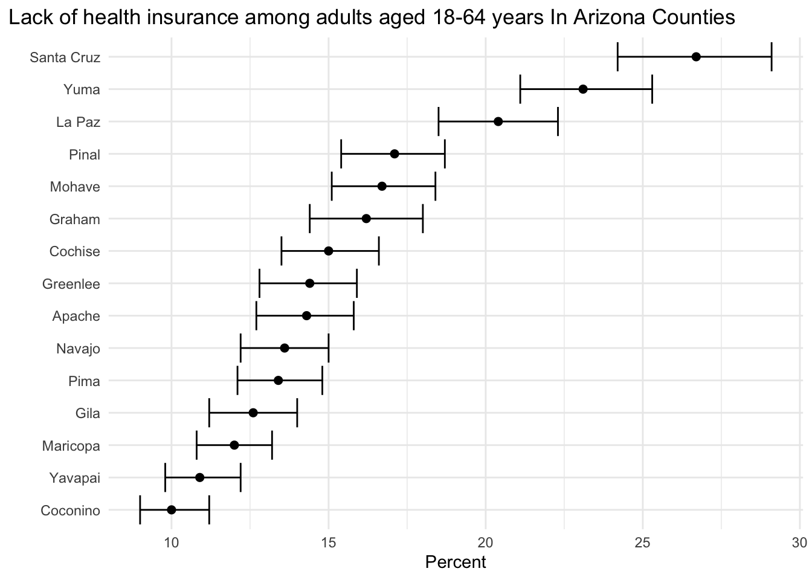
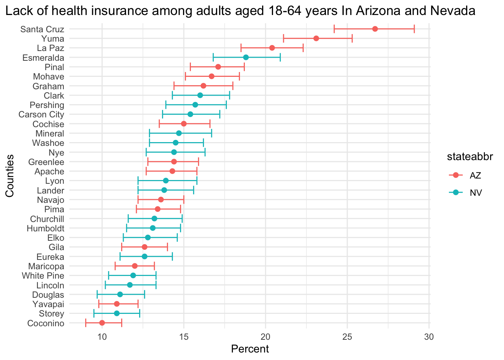

Code
# Install from CRAN
# install.packages("CDCPLACES)
# Install from Github
# devtools::install_github("brendensm/CDCPLACES")
library(CDCPLACES)
library(dplyr)
library(ggplot2)CDCPLACES.
Brenden Smith
January 10, 2024
This is part of the CDCPLACES blog series. To view the other posts in this series click here.
This post was updated on March 19, 2024 to reflect updates introduced in CDCPLACES 1.1.5.
To begin, we can install from CRAN, or from github, then load our packages.
get_dictionaryOur first functions allows us to easily view what measures we can query, via ‘measureid’, along with a brief definition of each function. If we run get_dictionary, a data frame is returned. We can view the measures in a data frame in the R Studio with View(). This is the preferred method for exploring the available measures.
For our example here, I will print the names of the variables in this dataframe.
[1] "measureid" "measure_full_name"
[3] "measure_short_name" "categoryid"
[5] "category_name" "places_release_2024"
[7] "measurename16_23" "places_release_2023"
[9] "places_release_2022" "places_release_2021"
[11] "places_release_2020" "_500_cities_release_2019"
[13] "_500_cities_release_2018" "_500_cities_release_2017"
[15] "_500_cities_release_2016" "frequency_brfss_year"
[17] "shortname16_23" This data frame is useful for several reasons. It lists the available measures for each year of the CDC PLACES data, along with the data each variable was collected, all in a single place. Remember to use the measureid when querying your data.
get_placesThis function allows us to easily query data that we specify. In the example below, I will get the measure ACCESS2 (the current lack of health insurance among adults aged 18-64 years) for the state of Arizona. This function allows for multiple of these arguments.
year stateabbr statedesc locationname datasource category
1 2022 AZ Arizona Yuma BRFSS Prevention
2 2022 AZ Arizona La Paz BRFSS Prevention
3 2022 AZ Arizona Yavapai BRFSS Prevention
4 2022 AZ Arizona Yavapai BRFSS Prevention
5 2022 AZ Arizona Graham BRFSS Prevention
6 2022 AZ Arizona La Paz BRFSS Prevention
measure
1 Current lack of health insurance among adults aged 18-64 years
2 Current lack of health insurance among adults aged 18-64 years
3 Current lack of health insurance among adults aged 18-64 years
4 Current lack of health insurance among adults aged 18-64 years
5 Current lack of health insurance among adults aged 18-64 years
6 Current lack of health insurance among adults aged 18-64 years
data_value_unit data_value_type data_value low_confidence_limit
1 % Crude prevalence 15.6 14.2
2 % Crude prevalence 9.2 8.3
3 % Age-adjusted prevalence 10.9 9.8
4 % Crude prevalence 6.5 5.7
5 % Age-adjusted prevalence 16.2 14.4
6 % Age-adjusted prevalence 20.4 18.5
high_confidence_limit totalpopulation totalpop18plus locationid categoryid
1 17.1 207842 155973 04027 PREVENT
2 10.2 16506 13903 04012 PREVENT
3 12.2 246191 208516 04025 PREVENT
4 7.2 246191 208516 04025 PREVENT
5 18.0 38779 28375 04009 PREVENT
6 22.3 16506 13903 04012 PREVENT
measureid datavaluetypeid short_question_text
1 ACCESS2 CrdPrv Health Insurance
2 ACCESS2 CrdPrv Health Insurance
3 ACCESS2 AgeAdjPrv Health Insurance
4 ACCESS2 CrdPrv Health Insurance
5 ACCESS2 AgeAdjPrv Health Insurance
6 ACCESS2 AgeAdjPrv Health Insurance
geolocation
1 Point, -113.905997385394, 32.7694427722845
2 Point, -113.98153747073, 33.7292571142703
3 Point, -112.553640853115, 34.5996977529402
4 Point, -112.553640853115, 34.5996977529402
5 Point, -109.887402691851, 32.9327553402921
6 Point, -113.98153747073, 33.7292571142703It is also worth noting that by default geography specifying geography is set to “county”. If instead we want to examine census tracts, we could specify the argument. Likewise, release is set to “2023” by default.
The argument county can be used to filter results to specific counties. This is extremely useful for examining census level data for specific areas of states. Additionally, geometry can be added to include a shapefile in the query. For further examples of plotting with shapefiles, see this dedicated blog post.
From here, we can start to have fun. It is fairly straight forward to begin exploring data. Here I will first filter out the data so that I can plot the age adjusted rates of lack of health insurance in Arizona.
Notice that the data provide you with confidence limits, so I have chosen to plot them here with error bars.
az_access %>%
filter(datavaluetypeid == "AgeAdjPrv") %>%
ggplot(aes(data_value, reorder(locationname, data_value))) +
geom_point(size = 2) +
geom_errorbar(aes(xmin = low_confidence_limit, xmax = high_confidence_limit)) +
labs(title = "Lack of health insurance among adults aged 18-64 years In Arizona Counties",
y = "", x = "Percent") +
theme_minimal() +
theme(plot.title.position = "plot")
You can also extend this to multiple states to compare. You can easily query two (or more) state names, and plot them. Arizona seems to have a couple of counties that have a much higher rate compared to others.
# multi state comparison
two <- get_places(state = c("AZ", "NV"),
measure = "ACCESS2")
two %>%
filter(datavaluetypeid == "AgeAdjPrv") %>%
ggplot(aes(data_value, reorder(locationname, data_value), color = stateabbr)) +
geom_point(size = 2) +
geom_errorbar(aes(xmin = low_confidence_limit, xmax = high_confidence_limit)) +
labs(title =
"Lack of health insurance among adults aged 18-64 years In Arizona and Nevada",
y = "Counties", x = "Percent") +
theme_minimal() +
theme(plot.title.position = "plot")
We can go even further by comparing more states in the region. Here I have taken the average rate by state to easily compare. Texas appears to be far above the average.
multi <- get_places(state = c("AZ", "NV", "NM", "TX", "CA"), measure = "ACCESS2") %>%
filter(datavaluetypeid == "AgeAdjPrv") %>%
summarise(.by = "stateabbr", mean_val = mean(data_value), mean_low = mean(low_confidence_limit), mean_high = mean(high_confidence_limit))
multi %>%
ggplot(aes(mean_val, reorder(stateabbr, mean_val), color = stateabbr)) +
geom_point(size = 2) +
geom_errorbar(aes(xmin = mean_low, xmax = mean_high)) +
labs(title = "Mean lack of health insurance among adults aged 18-64 years In Southwest States",
y = "", x = "Percent") +
theme_minimal() +
theme(plot.title.position = "plot")